QUEM FICA
Um livro de acolhimento para quem está aprendendo a viver com a saudade.
Não existe um jeito certo de atravessar a dor. E você não precisa descobrir tudo hoje.
Há saudades que não desaparecem. Há lembranças que chegam sem avisar. E há dias em que simplesmente continuar já exige muito.
Quem Fica é um livro de acolhimento para quem está aprendendo a conviver com a ausência de alguém importante. Uma leitura delicada, com pequenas histórias, reflexões e gestos de cuidado para acompanhar você, sem pressa, sem cobranças e sem fórmulas prontas.
Uma leitura para fazer no seu tempo. Uma página de cada vez.
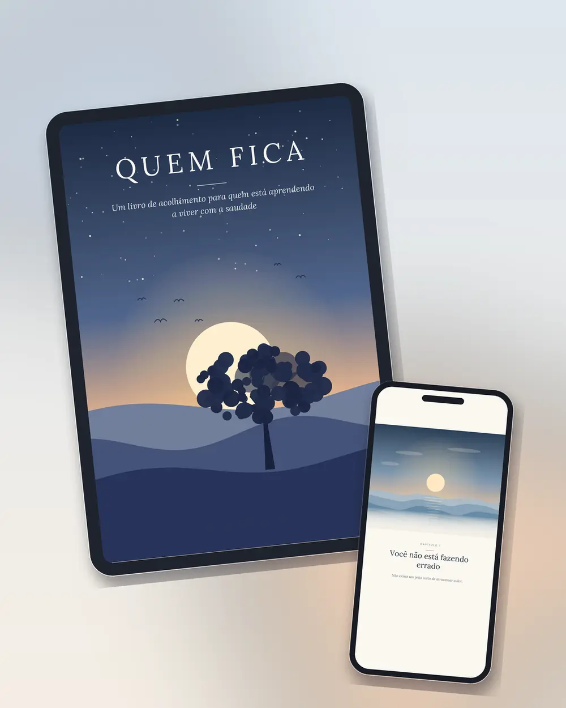
Você não precisa estar bem todos os dias.
Talvez existam dias em que uma lembrança faça sorrir. Em outros, uma música, uma fotografia ou uma data especial traga novamente aquela sensação de ausência.
E tudo bem.
Nem sempre encontramos palavras para explicar o que sentimos. Às vezes, as pessoas ao redor querem ajudar, mas não sabem o que dizer. E, em meio a tantas tentativas de seguir em frente, pode faltar justamente aquilo de que mais precisamos: um espaço para sentir sem precisar explicar.
Foi pensando nisso que nasceu o Quem Fica.
Um livro que não pretende ensinar você a esquecer, apagar lembranças ou estabelecer um prazo para a saudade. Ele foi criado para oferecer uma leitura acolhedora a quem está descobrindo, pouco a pouco, como continuar vivendo com aquilo que permanece no coração.
Um livro para ler sem pressa e sem obrigação de encontrar respostas.
Você vai encontrar
- 8 capítulos ilustrados: cada um acompanhado de uma atmosfera visual própria.
- Pequenas histórias: personagens fictícios que dão vida a situações e sentimentos relacionados à saudade.
- Reflexões delicadas: palavras para acompanhar momentos em que os sentimentos parecem difíceis de organizar.
- Para o seu dia: uma pergunta para refletir e um gesto simples ao final de cada capítulo.
- Páginas para escrever: espaços para registrar lembranças, escrever uma carta não enviada e reconhecer pequenas coisas que fizeram bem.
- Frases para os dias muito pesados: palavras para consultar quando faltar disposição.
- Lista dos dias pesados: um espaço com pequenas marcações para acompanhar esses momentos.
- Quando procurar ajuda: uma página com orientações e contatos importantes.
Cada parte foi pensada para respeitar seu ritmo. Você pode ler um capítulo hoje, deixar o livro descansar e voltar quando sentir vontade.
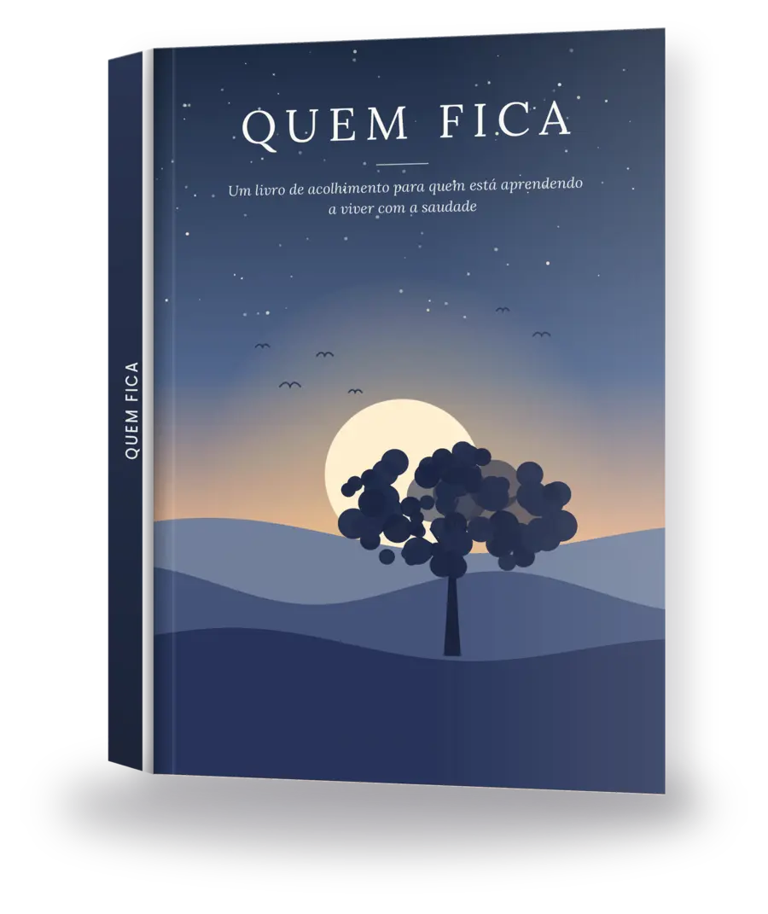
8 capítulos, 8 ilustrações originais e diferentes convites à reflexão.
As ilustrações foram criadas especialmente para o livro, trazendo elementos como ondas, janelas ao amanhecer, casas com luz acesa, lagos, velas, árvores e campos de flores. São imagens que acompanham a proposta de delicadeza e contemplação presente em toda a obra.
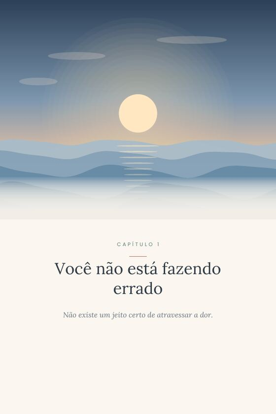
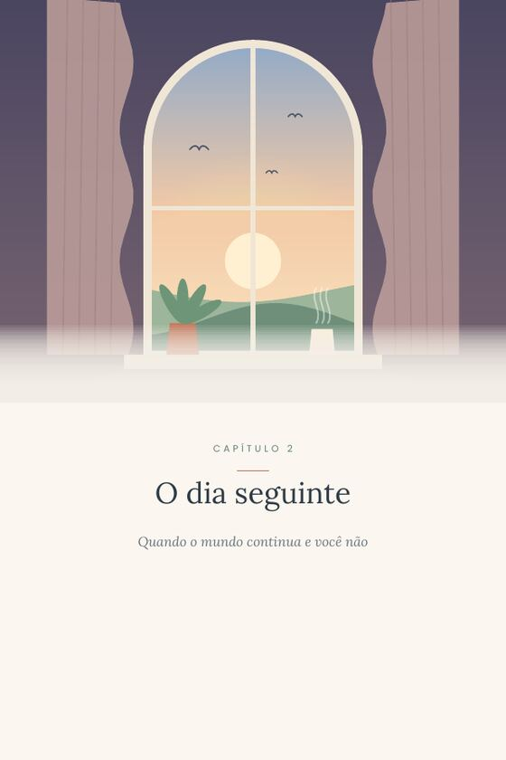
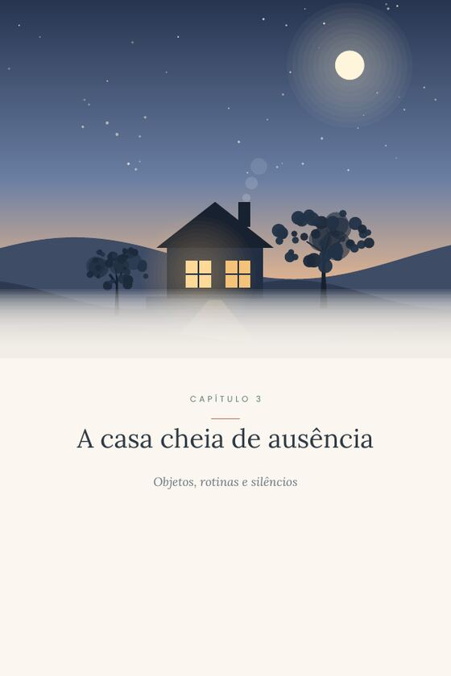
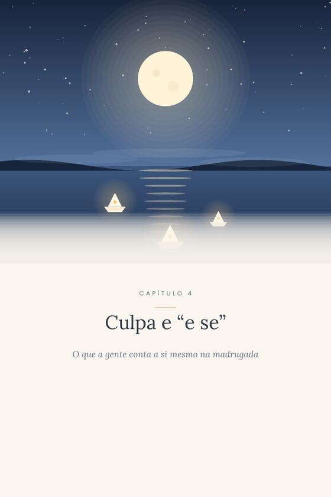
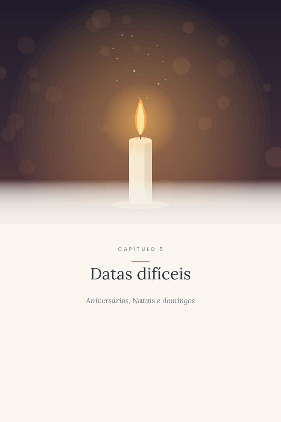
Para o seu dia.
Uma pergunta para levar consigo e um gesto simples que você pode experimentar. Não é uma tarefa. Não é uma cobrança. É apenas um convite para olhar com carinho para o dia que está diante de você.
Também existem páginas para colocar sentimentos em palavras.
O livro inclui quatro páginas especiais. Porque algumas coisas são difíceis de dizer em voz alta. Mas talvez possam começar a encontrar espaço no papel.
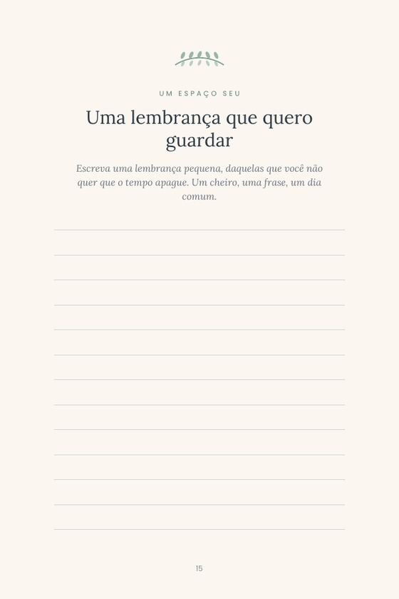
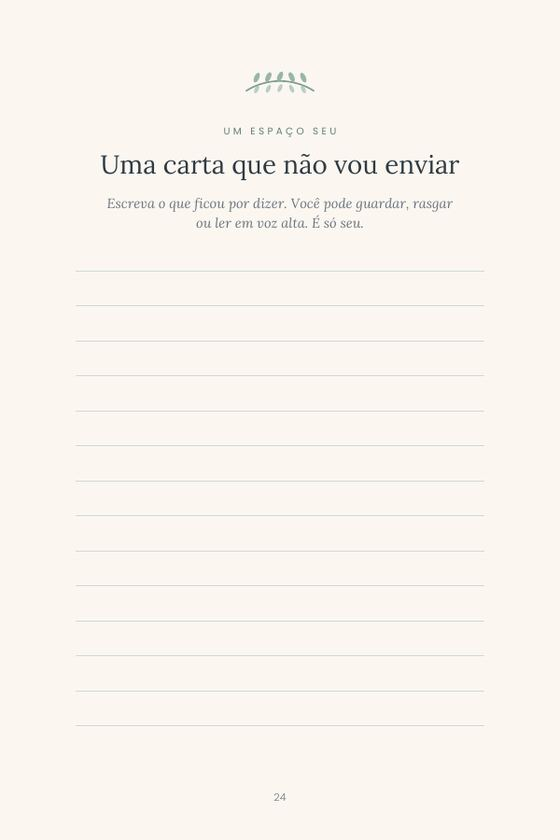
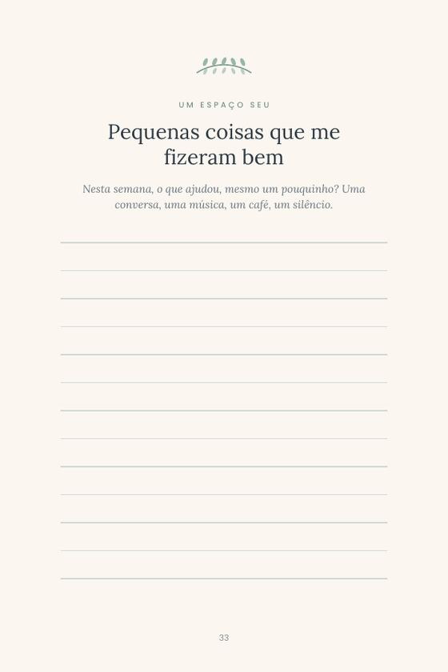
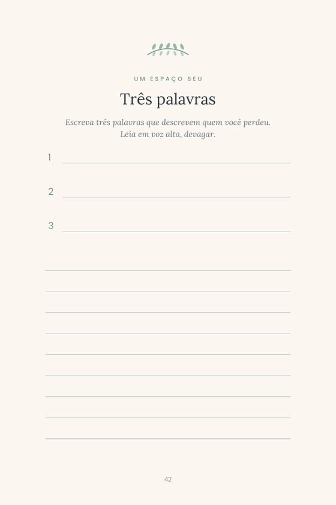
Para quem é o Quem Fica?
Este livro foi criado para pessoas que querem uma leitura sem conselhos prontos.
- Gostariam de encontrar uma leitura sensível sobre saudade e memória.
- Sentem falta de alguém importante e desejam um espaço de reflexão.
- Percebem que determinadas datas despertam lembranças especiais.
- Não gostam de conselhos prontos sobre como lidar com a perda.
- Gostariam de registrar histórias, sentimentos e lembranças.
- Querem oferecer uma leitura carinhosa a alguém que esteja vivendo um momento de perda.
Também pode ser uma forma delicada de presentear alguém que você gostaria de acolher.
Conheça o livro por dentro.
O Quem Fica foi desenvolvido em formato digital, com proporção 6×9", pensado para uma experiência de leitura em celulares e tablets.
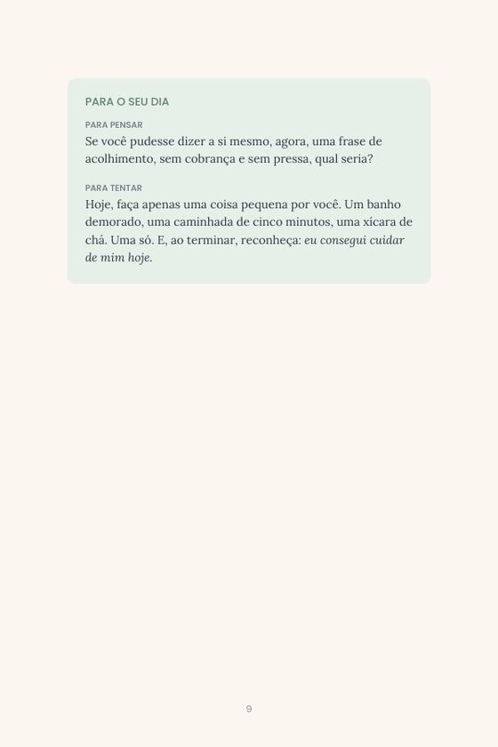
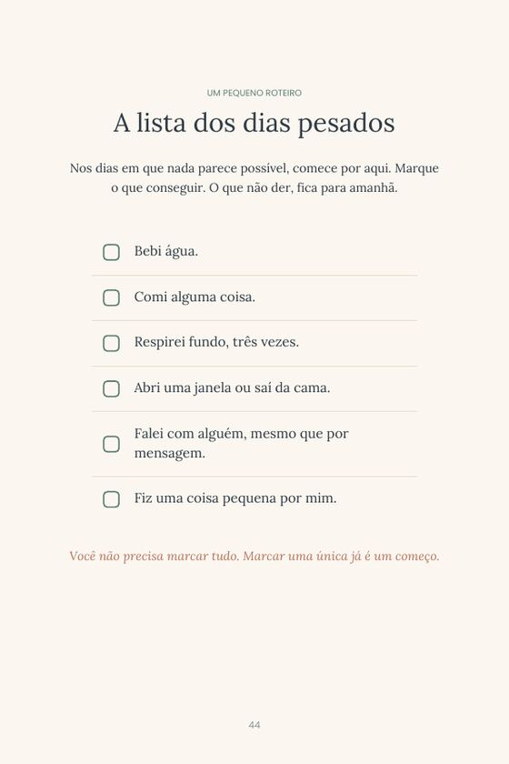
Você não precisa reservar horas para ler. Pode começar por onde quiser e seguir no seu próprio ritmo.
Um presente de palavras para quem está aprendendo a conviver com a saudade.
Talvez você esteja procurando um livro para si. Talvez esteja pensando em alguém querido que não sabe muito bem como expressar o que sente. Em ambos os casos, o Quem Fica oferece uma experiência de leitura feita de pequenas histórias, imagens e reflexões.
Não para oferecer respostas definitivas. Mas para lembrar que cada pessoa tem seu próprio tempo.
Sua leitura começa por R$ 19,90.
QUEM FICA
Um livro de acolhimento para quem está aprendendo a viver com a saudade.
- Ebook digital em PDF.
- 46 páginas.
- 8 capítulos ilustrados.
- Reflexões e histórias.
- Caderno de apoio ao final dos capítulos.
- Páginas para escrever e guardar lembranças.
Pagamento seguro pela plataforma de compra. Acesso digital após a confirmação do pagamento, conforme as condições da plataforma.
Perguntas frequentes
O Quem Fica é um livro físico?
Não. É um ebook digital em PDF.
Posso ler pelo celular?
Sim. O formato foi pensado para facilitar a leitura em celulares e tablets.
Quantas páginas tem?
O livro possui 46 páginas.
Preciso ler os capítulos na ordem?
Não. Você pode escolher por onde começar e fazer a leitura no seu próprio ritmo.
O livro possui atividades?
Sim. Ao final de cada capítulo há uma seção chamada Para o seu dia, com uma pergunta para reflexão e um gesto simples. Também existem quatro páginas para escrita pessoal.
O livro promete superar o luto?
Não. O propósito do Quem Fica não é oferecer uma fórmula para superar a perda. É proporcionar uma experiência de leitura e reflexão sobre saudade, memória e continuidade.
Posso comprar para presentear alguém?
Sim. O conteúdo pode ser uma opção de presente para alguém que aprecia leituras sensíveis sobre memória e saudade.
O livro substitui acompanhamento psicológico?
Não. É um material literário e reflexivo. Não substitui atendimento psicológico, médico ou qualquer acompanhamento profissional.
Como receberei meu livro?
O arquivo PDF será disponibilizado digitalmente após a confirmação do pagamento, conforme o processo da plataforma escolhida.
Não existe um calendário para a saudade.
Não existe uma maneira universal de sentir falta.
E não existe obrigação de transformar tudo em força, aprendizado ou superação.
Há dias de lembrança. Dias de silêncio. Dias em que uma pequena coisa faz bem. E há dias em que tudo o que conseguimos fazer é continuar.
Quem Fica é um convite para encontrar um pouco de acolhimento nessa caminhada. Porque algumas presenças permanecem de outras maneiras.
QUEM FICA
Um livro de acolhimento para quem está aprendendo a viver com a saudade.
Quero conhecer o livroQuem Fica é uma obra literária e reflexiva. Em situações de sofrimento intenso, procure apoio profissional. Em situações de emergência, busque atendimento imediato. No Brasil, o CVV atende pelo 188 e o SAMU pelo 192.